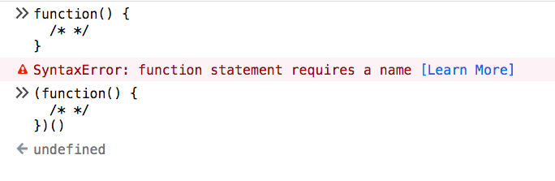

javascript-立即执行函数表达式 IIFE
立即执行函数表达式(IIFE) 是在创建函数后立即执行函数的方法。
立即执行函数表达式(IIFE) 非常有用，因为它们不会污染全局对象，它们是隔离变量声明的简单方法。
这是定义 IIFE 的语法：
JavaScript 代码:
1 | ;(function() { |
立即执行函数也可以使用箭头函数定义：
JavaScript 代码:
1 | ;(() => { |
基本上，我们在括号内定义了一个函数，然后在后面加上一个括号 () 来执行该函数：(/* function */)() 。
包裹函数的括号实际上是使我们的函数在内部被视为表达式。 否则，函数声明将无效，因为我们没有指定任何名称：

函数声明需要一个名称，而函数表达式不需要它。
你也可以将调用括号放在表达式括号内，没有区别，只是写法不同：
JavaScript 代码:
1 | (function() { |
使用一元运算符的替代语法
你可以使用一些更奇怪的语法来创建 IIFE ，但它在现实世界中很少使用，并且它依赖于使用任何一元运算符：
JavaScript 代码:
1 | -(function() { |
但是这种方式不适用于箭头函数。
命名的 IIFE
IIFE 也可以是命名的常规函数（不是箭头函数）。 这不会导致函数“泄漏”到全局作用域，并且在执行后也不能再次调用它：
JavaScript 代码:
1 | (function doSomething() { |
IIFE 前的分号
你可能已经注意到 IIFE 前的分号了：
JavaScript 代码:
1 | (function() { |
这可以防止在盲目合并两个 JavaScript 文件时出现问题。 由于 JavaScript 不需要分号，因此你可能会在最后一行中使用某些语句连接一个文件，从而导致语法错误。
这个问题基本上是通过像 webpack 这样的“智能”打包工具来解决的。